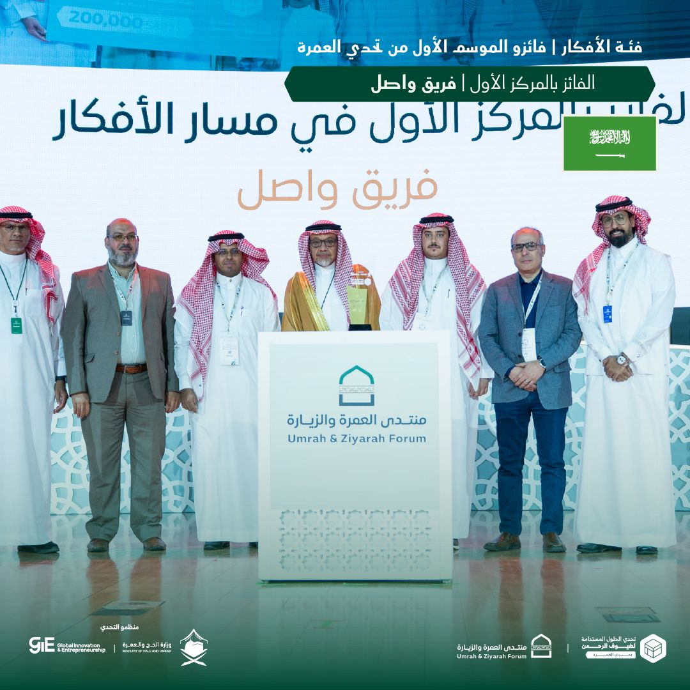

- Dr. Alaa Khamis gave a seminar titled "Agentic AI: Connecting Perception, Reasoning, and Action in Smart Mobility and Logistics" at KFUPM Business School. Slides are available here.
- Dr. Alaa Khamis gave a seminar titled "Agentic AI for Smart Mobility" as part of ISE seminar series at KFUPM. Slides are available here.
- Dr. Alaa Khamis gave a seminar titled "Automotive AI: From Situational Awareness to Automation and Optimization" as part of ICS/SWE seminar series at KFUPM. Slides are available here.
- Our papers " Agentic AI Systems: Architecture and Evaluation using a Frictionless Parking Scenario" and "Rethinking Vehicle Architecture Through Softwarization and Servitization" have been accepted for publication by IEEE Access, 2025.
- AI for Smart Mobility Lab team won first place in the Sustainable Solutions for Pilgrims Challenge – Umrah Challenge, part of the Umrah and Ziyarah Forum (UZF) organized by the Ministry of Hajj and Umrah in Al-Madinah from April 14–16, 2025. The competition featured 153 participants from 21 countries across two tracks: ideas and startups. Our patent-pending solution enables natural interaction, personalized end-to-end planning, and over-the-air updatable service bundles for local and international Umrah performers.

- Our paper with Ahmed Elgazwy and Khalid Elgazzar titled "Predicting Pedestrian Crossing Intentions in Adverse Weather with Self-Attention Models" has been accepted to be published in IEEE Transactions on Intelligent Transportation Systems (T-ITS), 2025.
- Professor Hesham Rakha of Virginia Tech and I are co-editing a special issue of Sustainability (Impact Factor: 3.3; CiteScore: 6.8) titled "Smart Mobility for Sustainable Development.
- Two Post-doctoral fellow positions are available to join AI for Smart Mobility Lab at KFUPM. These positions focus on Agentic AI for Seamless Integrated Mobility and Contextual Observability of Software-Defined Vehicles. Learn more here.
- The processdings of the 2024 IEEE International Conference on Smart Mobility (SM'24) is now available on IEEE Xplore.
News/Events